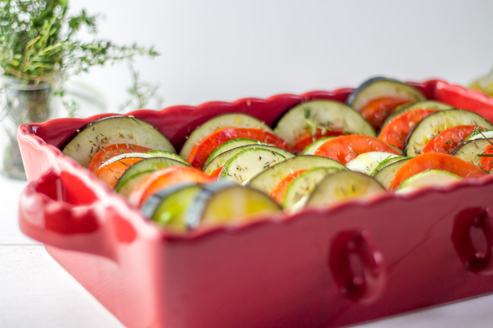

Tian de légumes du soleil

Aujourd’hui on se retrouve avec une recette pleine de bons légumes du soleil puisqu’il s’agit là de la recette du tian provençal.
Un tian est à l’origine un ustensile de cuisine et plus précisément un pot en terre cuite semblable à un plat à gratin. Aujourd’hui on associe le tian à un plat provençal composé principalement de légumes. Les légumes doivent cuire très longtemps au four et bien évidemment dans un plat ressemblant à un plat à gratin. Il en existe tout un tas de versions! Au poisson, à la viande aux légumes mais aussi aux fruits! L’autre jour j’avais très envie de poisson et plus précisément d’une bonne daurade alors j’ai décidé ce jour-là que le tian pour accompagner mon poisson serait un tian de légumes du soleil car les légumes du soleil sont de loin mes préférés alors quand vient l’été j’en profite!
J’ai résisté difficilement à l’appel de la mozzarella mais vous pouvez ne pas être aussi fort que moi et ajouter un peu de fromage entre les légumes. J’avais un peu (beaucoup) peur que mon chéri ne veuille rien manger à la vue de tous ces légumes et finalement c’est lui même qui le lendemain m’en a redemandé!
La quantité de légumes peut varier selon la taille du plat que vous utilisez mais aussi selon la taille de vos légumes. Mon côté « perfectionniste » me pousse à choisir des légumes avec à peu près le même diamètre mais étant donné que quand il s’agit de nature on ne choisit pas vraiment et ça n’a finalement pas grande importance si l’aubergine est plus imposante que la courgette ou l’oignon plus petit que la tomate! Tant que le goût y est c’est l’essentiel.
Si vous utilisez un plat plus petit que le mien et qu’il vous reste des légumes sur les bras vous pouvez les couper en petits dés puis les congeler pour plus tard vous en resservir dans un plat de pâtes par exemple ou encore dans une poêlée de légumes.
Je vous laisse maintenant avec la recette de mon tian aux légumes du soleil et à vous maintenant de décider avec quoi vous souhaitez l’accompagner!
Ingrédients
- Courgettes - 2
- Aubergine - 1 à 2 selon leur taille
- Tomates - 3
- Oignon - 2
- Ail - 4 gousses
- Romarin
- Thym
- Huile d'olive
- Sel, poivre
Instructions
- Préchauffer le four à 180°C
- Laver et couper tous vos légumes en rondelles (ni trop épaisses ni trop fines)
- Huiler légèrement un plat à gratin avec de l'huile d'olive
- Intercaler tous vos légumes dans l'ordre que vous préférez
- Une fois que vous avez positionné tous vos légumes insérez-y des gousses d'ail coupées en deux
- Faites de même avec le romarin et le thym
- Arroser d'un filet d'huile d'olive
- Enfourner à 180° puis au bout de 5 minutes baisser la température du four à 160°
- Laisser cuire pendant 45 minutes de manière à ce que les légumes soient bien fondants

Les tips de la communauté
Recette provençale très appréciée pour sa beauté visuelle et sa simplicité. Lecteurs séduits par le plat qui sent bon le Sud. Plusieurs commentaires positifs sur l'esthétique. Mentions de remplacement possible par une ratatouille. Très bon accueil global.
Astuces
- Plat provençal qui embaume la cuisine
- Sain, facile et bon à la fois
- Parfait pour la saison estivale
Variantes suggérées
- Peut être préparé comme alternative à une ratatouille
Ajustements signalés
- plus que le chant des cigales …